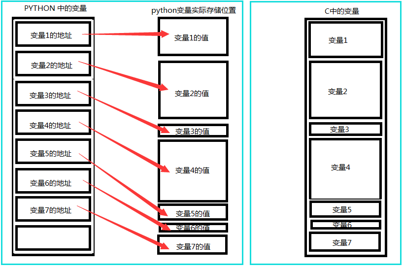
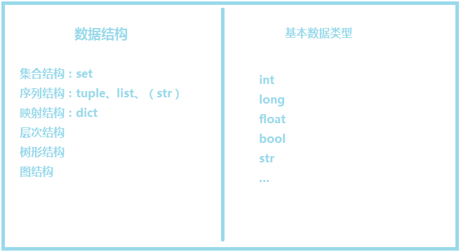
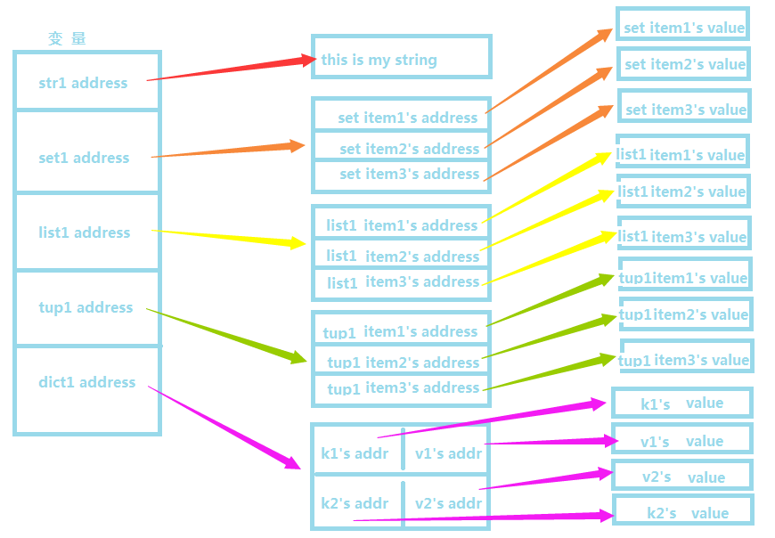
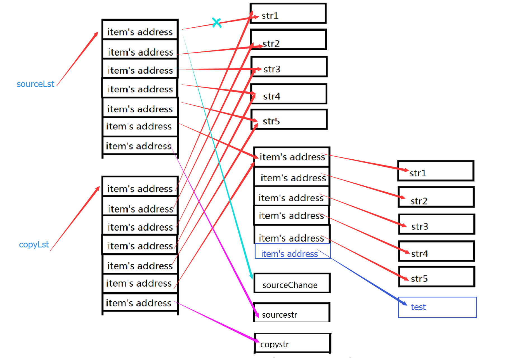
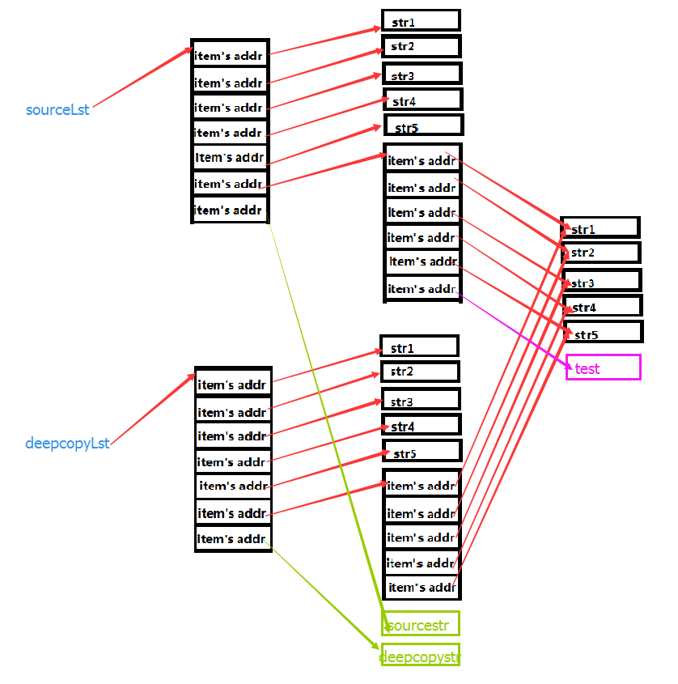

思维导图

列表
list是一种有序的集合，可以随时添加和删除其中的元素。即元素可变。
操作符
比较操作符
Python 3.X 的版本中已经没有 cmp 函数，如果你需要实现比较功能，需要引入 operator 模块，适合任何对象，包含的方法有：
如果比较的元素是同类型的,则比较其值,返回结果。
如果两个元素不是同一种类型,则检查它们是否是数字。
- 如果是数字,执行必要的数字强制类型转换,然后比较。
- 如果有一方的元素是数字,则另一方的元素”大”(数字是”最小的”)
- 否则,通过类型名字的字母顺序进行比较。
如果有一个列表首先到达末尾,则另一个长一点的列表”大”。
如果我们用尽了两个列表的元素而且所 有元素都是相等的,那么结果就是个平局,就是说返回一个 0。
序列类型操作符
列表对 + 和 * 的操作符与字符串相似。+ 号用于组合列表，* 号用于重复列表。
- len([1, 2, 3])——-长度（3）
- [1, 2, 3] + [4, 5, 6]——-组合（[1,2,3,4,5,6]）
- [‘Hi!’] * 4——-重复（[‘Hi!’,’Hi!’,’Hi!’,’Hi!’]）
- 3 in [1, 2, 3]——元素是否在列表中（True）
注：对于列表的组合操作使用list1.extend(list2)更佳
列表解析
[i for i in range(10)]
内建函数
序列类型
- len()/sum()/max()/min()
- sorted()/reversed()
- enumerate()/zip()
- list()/tuple()
其中聚合函数max、min以及sorted均可传递key参数，例如：
|
|
列表类型
- list.count()——-计数
- list.index()——-查找
- list.append()——-末尾添加
- list.insert(1, ‘nb’)——-插入
- list1.extend(list2)——末尾追加序列中多个值
- list.pop()——-移除元素，默认最后一个；或删除指定位置元素
- list.remove()——-移除某值的第一个匹配项
- list.sort()/list.reverse()——-排序/逆序
注：sort() 函数用于对原列表进行排序，如果指定参数，则使用比较函数指定的比较函数。语法：list.sort([func])
元组
- Python的元组与列表类似，不同之处在于元组的元素不能修改。
- 元组使用小括号，列表使用方括号。
- 由于元组不可变，也就没有append、insert这样的方法。
- 一旦初始化就不能修改
元组不可变的意义：因为tuple不可变，所以代码更安全。如果可能，能用tuple代替list就尽量用tuple。可以作为字典的键
元组的陷阱：当你定义一个tuple时，在定义的时候，tuple的元素就必须被确定下来。
消除歧义：只有1个元素的元组定义时必须加一个逗号,来消除小括号的歧义。
内建函数
序列类型：同list
元组类型（BIF）：仅剩
- count()
- index()
特殊特性
回顾：不可变类型：数字、字符串、元组
并非不可变：来看一个”可变的”元组
|
|
这个tuple定义的时候有3个元素，分别是'a'，'b'和一个list。不是说tuple一旦定义后就不可变了吗？怎么后来又变了？
别急，我们先看看定义的时候tuple包含的3个元素：

当我们把list的元素'A'和'B'修改为'X'和'Y'后，tuple变为：

表面上看，tuple的元素确实变了，但其实变的不是tuple的元素，而是list的元素。tuple一开始指向的list并没有改成别的list，所以，tuple所谓的“不变”是说，tuple的每个元素，指向永远不变。即指向’a’，就不能改成指向’b’，指向一个list，就不能改成指向其他对象，但指向的这个list本身是可变的！
总结：理解了“指向不变”后，要创建一个内容也不变的tuple怎么做？那就必须保证tuple的每一个元素本身也不能变。
拷贝问题
python内存中变量的存储情况：在高级语言中，变量是对内存及其地址的抽象。对于python而言，python的一切变量都是对象，变量的存储，采用了引用语义的方式，存储的只是一个变量的值所在的内存地址，而不是这个变量的只本身。
引用语义：在python中，变量保存的是对象(值)的引用，我们称为引用语义。采用这种方式，变量所需的存储空间大小一致，因为变量只是保存了一个引用。也被称为对象语义和指针语义。
值语义：有些语言采用的不是这种方式，它们把变量的值直接保存在变量的存储区里，这种方式被我们称为值语义，例如C语言，采用这种存储方式，每一个变量在内存中所占的空间就要根据变量实际的大小而定，无法固定下来。
值语义和引用语义的区别：
值语义： 死的、 傻的、 简单的、 具体的、 可复制的
引用语义： 活的、 聪明的、 复杂的、 抽象的、 不可复制的
一图胜千言：

基本数据类型的地址存储及改变情况：
在python中的数据类型包括：bool、int、long、float、str、set、list、tuple、dict等等。我们可以大致将这些数据类型归类为简单数据类型和复杂的数据结构。
我的划分标准是，如果一个数据类型，可以将其他的数据类型作为自己的元素，我就认为这是一种数据结构。数据结构的分类有很多种，但是在Python中常用的只有
集合、序列和映射三种结构。对应python中的set、list(tuple、str)、dict；常用的数据类型有int、long、float、bool、str等类型。（其中，str类型比较特别，因为从C语言的角度来说，str其实是一个char的集合，但是这与本文的关联不大，所以我们暂时不谈这个问题）

由于python中的变量都是采用的引用语义，数据结构可以包含基础数据类型，导致了在python中数据的存储是下图这种情况，每个变量中都存储了这个变量的地址，而不是值本身；对于复杂的数据结构来说，里面的存储的也只只是每个元素的地址而已。

python为这种需求提供了copy模块。提供了两种主要的copy方法，一种是普通的copy，另一种是deepcopy。我们称前者是浅拷贝，后者为深拷贝。
浅拷贝
一图胜千言

我们可以知道sourceLst和copyLst列表中都存储了一坨地址，当我们修改了sourceLst1的元素时，相当于用’sourceChange’的地址替换了原来’str1’的地址，所以sourceLst的第一个元素发生了变化。而copyLst还是存储了str1的地址，所以copyLst不会发生改变。
当sourceLst列表发生变化，copyLst中存储的lst内存地址没有改变，所以当lst发生改变的时候，sourceLst和copyLst两个列表就都发生了改变。
这种情况发生在字典套字典、列表套字典、字典套列表，列表套列表，以及各种复杂数据结构的嵌套中，所以当我们的数据类型很复杂的时候，用copy去进行浅拷贝就要非常小心！
示例：
|
|
深拷贝
一图胜千言

其实深拷贝就是在内存中重新开辟一块空间，不管数据结构多么复杂，只要遇到可能发生改变的数据类型，就重新开辟一块内存空间把内容复制下来，直到最后一层，不再有复杂的数据类型，就保持其原引用。这样，不管数据结构多么的复杂，数据之间的修改都不会相互影响。这就是深拷贝！
示例：
|
|